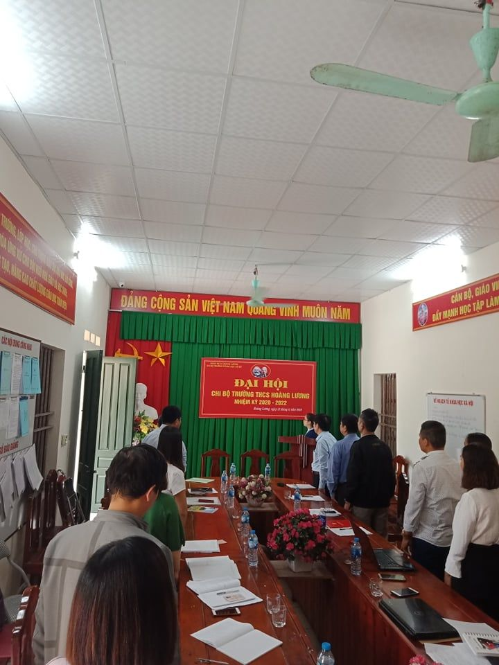
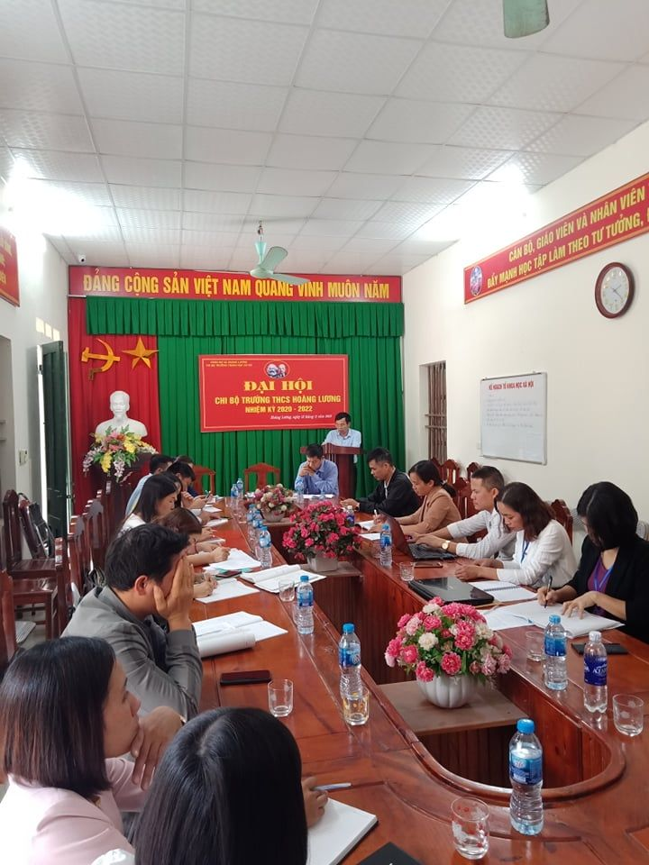
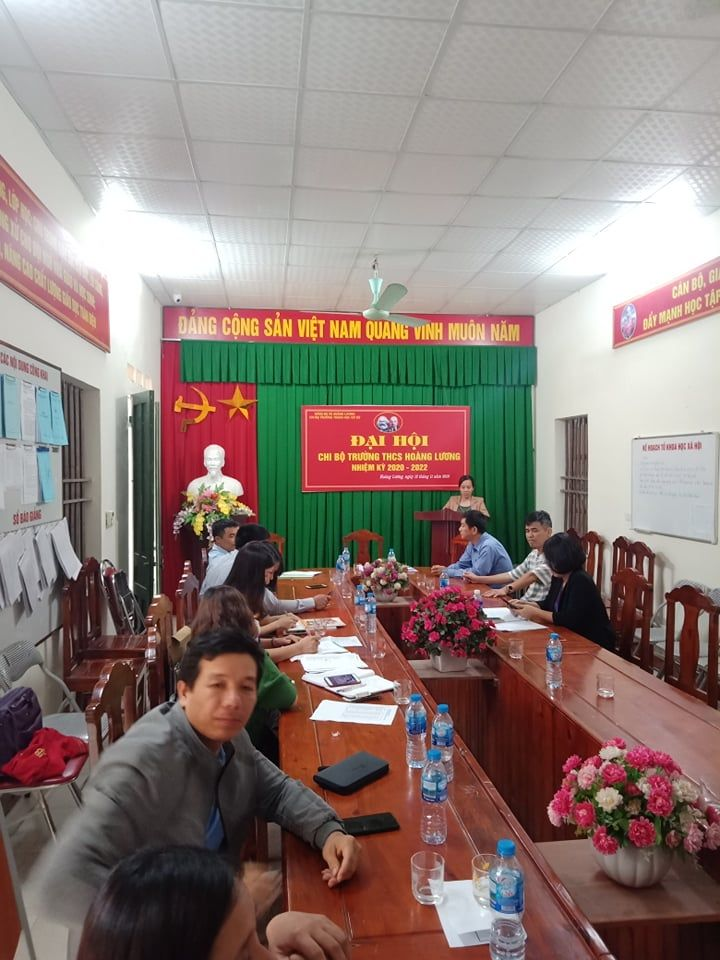
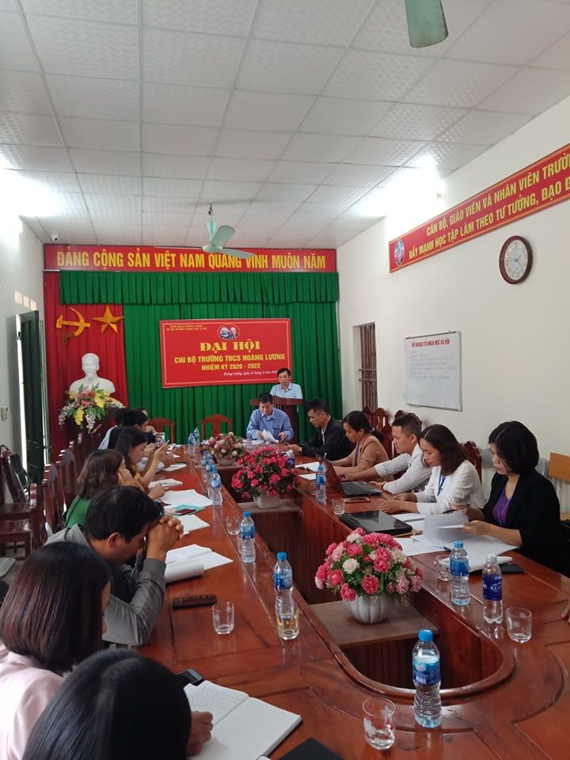
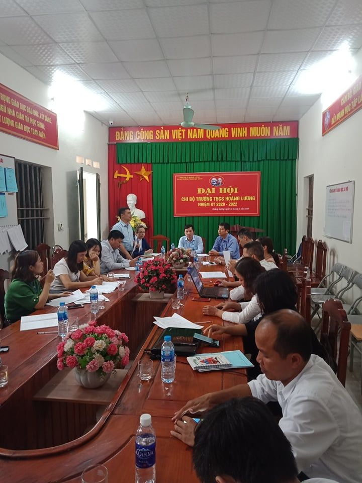
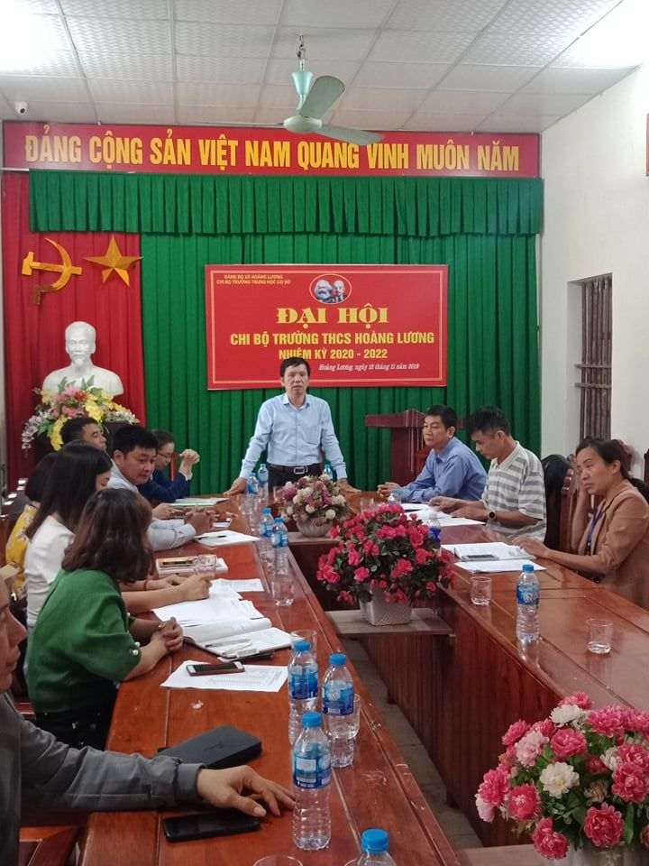
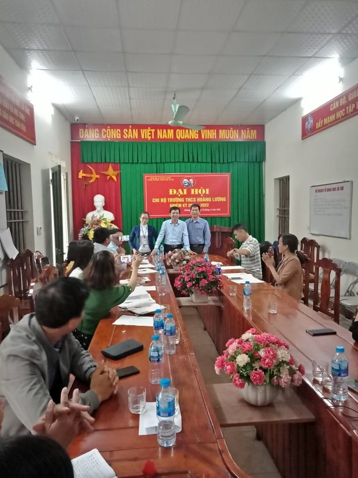

Đại hội chi bộ trường THCS Hoàng Lương nhiệm kỳ 2020-2022
Đại hội chi bộ trường THCS Hoàng Lương nhiệm kỳ 2020-2022
NGHỊ QUYẾT
ĐẠI HỘI CHI BỘ NHIỆM KỲ 2020 - 2022
Đại hội Chi bộ trường THCS Hoàng Lương nhiệm kỳ 2020-2022 tiến hành ngày 12 / 11 /2019, đại hội có mặt 17 /18 đảng viên được triệu tập.
Qua một buổi làm việc các đại biểu tham dự đại Hội đã thảo luận đóng góp nội dung trong báo cáo tổng kết nhiệm kỳ 2017-2019, dự thảo phương hướng nhiệm vụ nhiệm kỳ 2020-2022 và đóng góp bản báo cáo tự kiểm điểm trong ban chi ủy nhiệm kỳ 2017-2019.
Đại hội tiến hành bầu Ban chi ủy nhiệm kỳ 2020-2022 gồm 03 đồng chí và bầu bí thư, phó bí thư chi bộ.
Để thống nhất cao và tiến hành tổ chức thực hiện thắng lợi các chỉ tiêu nhiệm vụ trong nhiệm kỳ tới đã được thảo luận tại Đại hội. Đại hội Chi bộ trường THCS Hoàng Lương nhiệm kỳ 2020-2022 thống nhất:
QUYẾT NGHỊ
1. Nhất trí thông qua báo cáo tình hình thực hiện nghị quyết của chi bộ nhiệm kỳ 2017-2019 và mục tiêu, nhiệm vụ, giải pháp thực hiện trong nhiệm kỳ 2020-2022 với những nội dung chủ yếu sau:
1.1 Về đánh giá tình hình thực hiện Nghị quyết Đại hội đảng viên chi bộ trường THCS Hoàng Lương nhiệm kỳ 2017-2019.
Nhiệm kỳ 2017-2019, chi bộ đã hoàn thành nhiệm vụ lãnh đạo mà nghị quyết đại hội đã đề ra, chất lượng dạy và học được duy trì và ổn định, hàng năm có sự tăng trưởng theo hướng tích cực, tỉ lệ học sinh giỏi được giữ vững. Các tổ chức đoàn thể duy trì hoạt động có nề nếp góp phần thúc đẩy các phong trào thi đua yêu nước. Mỗi đảng viên đều nêu cao tinh thần tiên phong gương mẫu trong mọi hoạt động.
Chi bộ luôn thể hiện rõ vai trò lãnh đạo trên mọi mặt hoạt động. Công tác tự phê bình và phê bình được thực hiện ngày càng đi vào chiều sâu, tạo nên sự đoàn kết, thống nhất về ý chí và hành động của toàn chi bộ và tập thể nhà trường..
Thực hiện Chỉ thị số 05-CT/TW ngày 15/5/2016 của Bộ Chính trị (khóa XII) và Chỉ thị số 27/CT-TTg ngày 08/9/2016 của Thủ tướng Chính phủ về “Đẩy mạnh học tập và làm theo tư tưởng, đạo đức, phong cách Hồ Chí Minh” được quán triệt và triển khai thực hiện sâu rộng trong hệ thống chính trị của nhà trường, góp phần thúc đẩy các phong trào thi đua yêu nước của đơn vị đi vào chiều sâu, có chất lượng.
1.2 Về mục tiêu nhiệm vụ và giải pháp chủ yếu trong nhiệm kỳ 2020-2022:
Đại hội nhất trí các mục tiêu và những giải pháp chủ yếu cần tập trung thực hiện trong nhiệm kỳ:
1.2.1 Mục tiêu – nhiệm vụ cần đạt trong nhiệm kỳ:
* Về tư tưởng chính trị - đạo đức tác phong:
Làm tốt công tác giáo dục chính trị cho cán bộ đảng viên, giáo viên, nhân viên và học sinh để mọi người nhận thức đúng và đầy đủ về đường lối, chủ trương chính sách của Đảng và Nhà nước; giáo dục tình yêu quê hương đất nước, trách nhiệm của mỗi cá nhân.
Tiếp tục đẩy mạnh Thực hiện Chỉ thị số 05-CT/TW ngày 15/5/2016 của Bộ Chính trị (khóa XII) và Chỉ thị số 27/CT-TTg ngày 08/9/2016 của Thủ tướng Chính phủ về “Đẩy mạnh học tập và làm theo tư tưởng, đạo đức, phong cách Hồ Chí Minh”.
- 100% đảng viên, giáo viên có phẩm chất đạo đức tốt, lập trường tư tưởng chính trị vững vàng; giữ gìn lối sống trong sạch lành mạnh.
* Về chuyên môn nghiệp vụ:
Thực hiện tốt các mục tiêu đổi mới giáo dục, nâng cao chất lượng dạy và học.
- 100% đảng viên xếp loại chuyên môn khá, giỏi.
- Giáo viên dạy giỏi các cấp: Đạt từ 7-8 GVG cấp huyện; 02 GVG cấp tỉnh.
* Chất lượng giáo dục:
Duy trì nề nếp và sỉ số học sinh, tăng cường công tác giáo dục đạo đức học sinh, đánh giá xếp loại học sinh một cách khách quan.
Phấn đấu nâng cao chất lượng giáo dục toàn diện:
+ Hạnh kiểm: Loại tốt- Khá trên 95%; trung bình: 5%
+ Học lực: Giỏi: 10%, Khá: 43%, TB: 45%, Yếu: 2% ( trong đó tỷ lệ lưu ban dưới 1.5%; bỏ học dưới 1%)
+Tỉ lệ tuyển vào lớp 6: 100%; tuyển vào lớp 10: xếp thứ 15/27
+ Học sinh giỏi cấp : Xếp thứ 15/27.
+ Tốt nghiệp THCS: 98%.
* Về các hoạt động đoàn thể
- Củng cố và duy trì có nề nếp các hoạt động đoàn thể. Nâng cao vai trò nhiệm vụ các hoạt động đoàn thể trong tổ chức thực hiện nhiệm vụ của chi bộ và nhà trường.
- Phấn đấu xây dựng các đoàn thể vững mạnh xuất sắc.
* Về công tác xây dựng Đảng:
-Tiếp tục nâng cao sức chiến đấu của chi bộ Đảng trong mọi lĩnh vực hoạt động.
- 2/18 đảng viên hoàn thành xuất sắc nhiệm vụ.
- 16/18 đảng viên hoàn thành tốt nhiệm vụ.
- Không có đảng viên vi phạm điều lệ Đảng, qui định những điều đảng viên không được làm.
- Giới thiệu và bồi dưỡng đối tượng đảng 4-5 quần chúng / nhiệm kỳ.
- Chi bộ : trong sạch vững mạnh.
- Trường đạt tập thể lao động tiên tiến. Giữ vững danh hiệu trường chuẩn quốc gia.
1.2.2 Các giải pháp thực hiện:
*Chuyên môn nghiệp vụ:
- Lãnh đạo nhà trường xây dựng kế hoạch hoạt động cụ thể của nhà trường để mỗi cán bộ giáo viên công nhân viên trong nhà trường thực hiện đúng chức năng nhiệm vụ của mình, phát quy năng lực hoàn thành xuất sắc nhiệm vụ được giao.
- Tiếp tục thực hiện giao chỉ tiêu kế hoạch cho từng CBGV làm cơ sở đánh giá hiệu quả công tác.
- Tăng cường lãnh đạo hoạt động tổ chuyên môn, đổi mới nội dung sinh hoạt tổ với mục tiêu nâng cao nâng cao năng lực giảng dạy của mỗi giáo viên.
- Nâng cao chất lượng hoạt động Ban đại diện CMHS, làm tốt công tác xã hội hóa tạo nguồn lực phát triển giáo dục tại địa phương.
* Công tác đoàn thể:
- Xây dựng và thực hiện quy chế làm việc, mối quan hệ giữa cấp ủy, chính quyền và đoàn thể, phát huy hiệu quả hoạt động các tổ chức, làm tốt công tác tuyên truyền giáo dục để mỗi đoàn viên gắn bó với tổ chức đoàn thể.
- Các tổ chức đoàn thể cần chủ động phát động các phong trào thi đua tạo không khí sôi nổi trong thực hiện nhiệm vụ.
- Tiếp tục duy trì và nâng cao chất lượng hoạt động văn hóa , văn nghệ, TDTT theo quy ước xây dựng cơ quan văn hóa.
* Công tác xây dựng Đảng:
- Thực hiện tốt điều lệ Đảng, chấp hành những quy định về những điều đảng viên không được làm; thực hiện tốt chủ trương chính sách của Đảng và Nhà nước.
- Phát huy tốt vai trò hạt nhân lãnh đạo, xây dựng chi bộ trong sạch vững mạnh.
- Tăng cường ý thức tự phê bình theo tinh thần Nghị quyết Trung ương 4 (khóa XII) gắn với thực hiện Chỉ thị 05-CT/TW của bộ Chính trị (khóa XII) về “Đẩy mạnh học tập và làm theo tư tưởng, đạo đức, phong cách Hồ Chí Minh”.
Đại hội đảng viên chi bộ THCS Hoàng Lương nhiệm kỳ 2020-2022 kêu gọi toàn thể đảng viên, cán bộ giáo viên, nhân viên phát huy tinh thần đoàn kết nêu cao trách nhiệm quyết tâm thực hiện thắng lợi các mục tiêu nhiệm vụ của Nghị quyết Đại hội chi bộ nhiệm kỳ 2020-2022 đề ra./.
